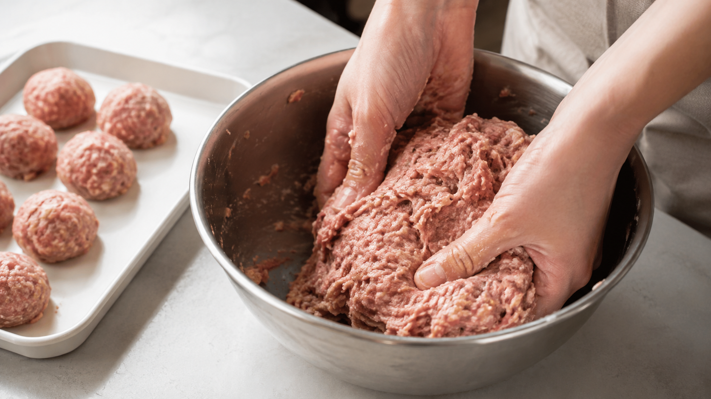

ひき肉は、こねると粒から一枚になる。粘りの正体は肉のたんぱく質
ボウルの中では、最初はぽろぽろしていたひき肉が、こねるうちに手へまとわりついてくる。
色も質感も変わり、最後には全体が一つの塊になる。つなぎを入れる前から起きる、この粘りはどこから来るのだろう。
答えは、こねることで肉の粒の表面へ出てくるたんぱく質だ。塩が加わると、そのたんぱく質はさらに動きやすくなり、肉同士をつなぐ薄い接着剤のように働く。
今日の結論
ひき肉をこねる動作は、材料を均一に混ぜるだけではない。肉の粒を、つながった一枚の構造へ作り変える操作だ。
まとまりと弾力がほしい料理では、塩を加えて粘りが出るまでこねる。反対に、肉の粒がほどける食感を残したいなら、粘りが出る前に形を整える。
どちらが正解かではない。こねる時間を、食感を選ぶためのつまみとして使う。
ひき肉の表面から、肉の「接着剤」が出てくる
肉は、細い筋肉の繊維が束になってできている。ひき肉にすると、その束が細かく切れ、内部にあったたんぱく質が表面へ触れやすくなる。
そこへ塩を加えてこねると、筋肉を動かしていたたんぱく質の一部が溶け出し、肉の粒のまわりへ薄く広がる。これを筋原線維たんぱく質といい、中でもミオシンが粘りと加熱後の骨組みに大きく関わる。
最初は砂利のように別々だった肉の粒へ、粘る膜がかかる。その膜同士が触れると、粒はばらばらに戻りにくくなる。これが、手へ吸いつくような粘りの正体だ。
こねるほど、表面の膜が肉全体へ広がる
ひき肉の混ぜ方を調べた研究では、混ぜる時間と塩の働きによって、肉から取り出されるたんぱく質が増えることが確認された。さらに、そのたんぱく質が油や水分を抱える働きとも強く結びついていた。
ここから分かるのは、粘りが「肉の脂が手で溶けただけ」ではないことだ。脂が柔らかくなる影響はあっても、肉同士を一つにつなぐ中心は、表面へ出て広がったたんぱく質にある。
塩も味付けだけではない。肉の中でたんぱく質を動かし、粒と粒の間へ出す役割を持つ。だから、同じ量のひき肉でも、塩をいつ加え、どこまでこねたかで焼き上がりが変わる。
加熱すると、粘る膜が弾力のある網へ変わる
生の状態で肉をまとめている膜は、火が入ると別の形へ組み直される。
たんぱく質は熱で形を変え、隣のたんぱく質とつながって立体的な網を作る。これが加熱ゲルだ。牛肉のミオシンを加熱した研究でも、ミオシンが加熱中に集まり、肉製品の弾力を支える構造を作ることが確認されている。
生地をよくこねた肉団子が、焼くとばらけず、押すと戻る。その弾力は、パンのグルテンとは別の仕組みだ。肉から出たたんぱく質が、熱によって粒、脂、水分を一緒に抱える網へ変わっている。
こねる前の粒が小さな島なら、加熱後は橋でつながった一つの陸地になる。
作りたい食感から、こね方を逆算する
つくね、肉団子、ミートローフのように、切っても崩れにくい食感がほしいなら、塩を早い段階で加える。手やへらで混ぜ、肉がボウルの中で一つに動き、表面につやと粘りが出たところで次の材料を合わせる。
一方、粗くほぐれる肉らしさを残したい料理では、混ぜる目的を「味を散らすこと」と「形を保つこと」までにする。粘りを強く出す必要はない。
重要なのは、レシピに「よくこねる」と書いてあるから従うことではない。その料理が、切ったときにつながっていてほしいのか、口の中でほどけてほしいのかを決める。こね方は、その答えに合わせて変えられる。
この考え方は、肉以外の練り物にも広がる
魚のすり身から作るかまぼこやさつま揚げ、鶏肉のつくねにも、似た考え方が使える。
細かくした筋肉へ塩を加え、練ってたんぱく質を動かし、加熱して網を作る。原料が豚、牛、鶏、魚へ変わっても、「粒からたんぱく質を出し、熱でつなぐ」という流れは共通している。ただし、原料ごとにたんぱく質の組成が違うため、同じ時間で同じ弾力になるわけではない。
この原理を知ると、こねる動作が単なる下準備ではなくなる。ハンバーグを柔らかくほどけさせるのか、肉団子を弾ませるのか。手を動かす前に、完成した食感を選べるようになる。
まとめ
ひき肉の粘りは、こねることで肉の表面へ出た筋原線維たんぱく質が、粒同士をつなぐために生まれる。
塩はその動きを助け、加熱は粘る膜を弾力のある網へ変える。
次にひき肉を使うときは、時間ではなく状態を見る。全体が一つになり、手へ吸いつくところまで進めるのか。粒が残るうちに止めるのか。こね方を変えるだけで、同じひき肉から別の食感を作れる。
参考文献
- Gillett TA, et al. Parameters Affecting Meat Protein Extraction and Interpretation of Model System Data for Meat Emulsion Formation. Journal of Food Science. 1977;42(6):1606-1610. https://doi.org/10.1111/j.1365-2621.1977.tb08438.x
- Booren AM, Jones KW, Mandigo RW, Olson DG. Effects of Blade Tenderization, Vacuum Mixing, Salt Addition and Mixing Time on Binding of Meat Pieces into Sectioned and Formed Beef Steaks. Journal of Food Science. 1981;46(6):1678-1680. https://doi.org/10.1111/j.1365-2621.1981.tb04461.x
- Nakayama T, Sato Y. Relationships Between Binding Quality of Meat and Myofibrillar Proteins: IV. Journal of Texture Studies. 1971;2(4):475-488. https://pubmed.ncbi.nlm.nih.gov/28370123/
- Fang T, et al. Effects of heating rates on the self-assembly behavior and gelling properties of beef myosin. Journal of the Science of Food and Agriculture. 2023. https://pubmed.ncbi.nlm.nih.gov/36658470/
- Egelandsdal B, Martinsen B, Autio K. Influence of pH on rheological properties of porcine myofibrillar protein during heat induced gelation. Meat Science. 2005. https://pubmed.ncbi.nlm.nih.gov/22063486/